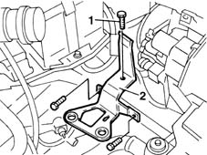
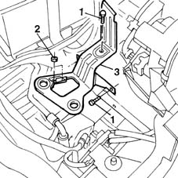

1048A12 air cleaner support - r r with air cleaner assembly removed
- Path
- Procedures > 10 ENGINE UNIT > 1048 ENGINE AIR SUPPLY CIRCUIT > 1048A VACUUM AIR CIRCUIT > 1048A12 air cleaner support - r r with air cleaner assembly removed
- Kind
- repair procedure (removal / refitting; the operation number is the code)
- Applies to
- all engines; all production periods
- Interactive page
- https://sloeber94.github.io/elrnDB-fMltpl/en/#/2891254
Applies to: engines: 1.6 16v; all production periods
 Removing
Removing
 Refitting
Refitting1. Undo the bolts securing the bracket to the chassis.
2. Remove the mounting bracket from the engine bay.

Applies to: engines: 1.6 16v; all production periods
Refitting
RemovingFit the air cleaner bracket.
Tighten the bolts.
Applies to: engines: 1.9 JTD 8V; all production periods
Removing
Refitting1. Unscrew the bolts securing the bracket to the body.
2. Unscrew the nuts securing the dehydrating filter to the bracket.
3. Remove the bracket from the engine bay.

Applies to: engines: 1.9 JTD 8V; all production periods
Refitting
RemovingFit the bracket.
Tighten the bolt and nuts securing the dehydrating filter to the bracket.
Tighten the bolts retaining the brackets to the body.